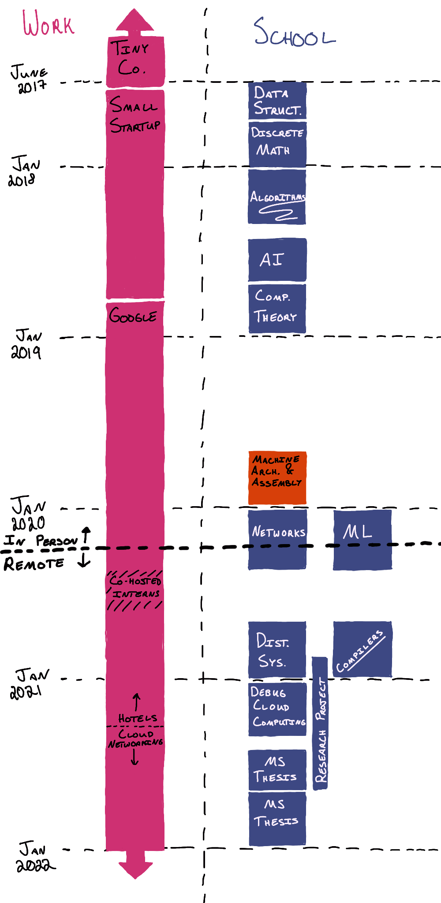

Completing a Part-Time Master's in Computer Science While Working
Jan 8, 2022 · 3619 words · 17 minutes read
“I’m going to be 29 anyways, so I might as well be 29 with a Master’s.”
— me 5 years ago debating whether I should take classes
On June 5, 2017, I started taking classes at Tufts University while working full time. On January 4, 2022, I submitted the final draft of my Master’s thesis. Much like my past self had hoped, I’ve made it 4 years in the future, and I’m done with my Master’s program. At the same time, I’m both very happy I did it and very happy to be done, and I’m going to describe a few thoughts about my experience.
For a quick visualization, this is what my work and school looked like for the last few years:
 small startup -> Google, while on the school side, my classes are listed." />(Fall 2020 was a busy time for me)
For a little background, I didn’t do any programming in college (though in retrospect I wish I had tried it), instead studying physics, French, and political science. I did a lot of self-studying on my own from roughly January 2015 onwards.
By the numbers
Classes
Overall I took 11 courses, 10 at Tufts and 1 at Oregon State University (online), and completed 2 semesters of a Master’s thesis. In rough order:
- Data Structures
- Discrete Math
- Algorithms
- Artificial Intelligence
- Theory of Computation
- Machine Architecture & Assembly (Oregon State)
- Networks
- Introduction to Machine Learning
- Cloud Computing
- Compilers
- Debugging Cloud Computing
- Thesis (Summer)
- Thesis (Fall)
The first five classes counted towards Tufts’ Post-Baccalaureate certificate program, which is roughly the equivalent of a CS minor, and the the second grouping of classes (and a few of the Post-Bacc classes) counted towards the Master’s degree. I took the assembly class at Oregon State because the Tufts equivalent was 10x as expensive (see later) and wouldn’t count towards graduate credit, and I could make up that requirement by taking a class that had the assembly class as a prerequisite. I took a small break from classes in Spring and Summer 2019 after finishing the Post-Bacc, then decided to complete the Master’s. I took another small break in the summer of 2020 while I co-hosted interns on my team at work.
Time
It took me a little over 4 years to do the Tufts CS Post-Bacc and the Master’s, at an average rate of 1 class per semester/summer.
I took these classes while working full time. I transitioned from a tiny company to a very small startup a week after starting classes (June 2017), and I went from that startup to Google in September 2018. I ended up getting a promotion in Fall 2020, and I transitioned from the Hotels team to the Cloud Networking team in April 2021.
In spring 2020, both my work and classes transitioned to be fully remote, and both have been remote since (with a small window of a few in-person meetings in late 2021).
Cost
When I started the classes, tuition was a whopping $5,052 per class for part-time students. After my first 4 classes, the department switched from per-class tuition ($5,052 per class) to per-credit hour tuition ($1,700 per credit). Classes ranged from 3-5 credits, and luckily I was able to finish the program with only 3-credit classes after that.
Google has an education tuition reimbursement benefit for classes taken while working there, and I was able to use this benefit for all classes I took after starting at Google.
Total cost: ~$61,000
Google’s help: ~$23,000
My final cost: ~$38,000
Thoughts, feelings, and reactions
The Good
Classes really helped me in my CS career
Even though there’s a gap between academic CS and working in tech, the classes I took had a very positive influence on my career with computers.
When I got my first real programming job at the small startup, they hired me as an inexperienced junior frontend engineer who would be willing to learn fast, and the classes helped show that I was serious about learning more. This helped me transition away from doing some development work at the tiny non-tech company to being a Real Engineer at a real (albeit small) tech company. That alone was easily worth the price of admission.
I took the Algorithms and AI courses before interviewing at Google, and the in-depth coverage of various algorithms helped build the fundamentals I used in my interviews and on the job since. I had done algorithm interviews before the algo class, and I highly recommend taking the class first. (Warning: confirmation bias) I didn’t go in with a bunch of LeetCode problems memorized, but instead a pretty good foundation of algorithms, data structures, and different types of problems I understood after carefully working through them, and these classes were very helpful for building that understanding. Again, easily worth it.
The other way these classes helped me is my transition at work from working on front end work to more backend and distributed systems work. When I started at Google, I worked mostly on the front end, but slowly over time I transitioned deeper into the stack, eventually transitioning teams to work on the Cloud Networking team on load balancing, deep in the C++ and networking stack. The classes I took on networking, distributed systems, and debugging distributed systems were incredibly helpful for building my background knowledge and helping me find an area I was really interested in, and I even did my master’s thesis on an area tangentially related to my day job work (adding a new flavor of distributed tracing to Envoy, an open source proxy that we use at work). These classes made this transition easier, and I think there’s also some value in the narrative around them too, being able to point to them in conversations as evidence of my interest in learning about this new area.
Shining light on the mysterious caves of CS
Interviewing and getting jobs aside, one of the best benefits of my classes is that they helped shed light on a wide selection of various areas in computer science. This served two great purposes: helping demystify areas that initially seemed scary and showing the true depth of some of these areas.
Coming into computer work without a solid CS background meant that there were many gaps in my knowledge. I had taken a few online classes and done some reading, but there were still many areas that I knew of without knowing how they worked. These can be described as the known unknowns; I’ve heard of it, and I know I don’t know about it. For example, there were many things in networking I had known about from cursory reading; I roughly knew about TCP/IP (partly from seeing the option in StarCraft when connecting to Battlenet in 2001), but I wasn’t familiar with any of the details. This is where the classes were especially helpful, as they represented a guided and structured exploration into these areas.
From networking to algorithms, the in-depth view helped to shed light on the mysterious unknowns, and it made these areas much more approachable. It helped build my portfolio of solved problems, building up my tool chest (or treasure chest?) of problems I had solved in the past, helping to further convince me that my future problems are solvable too. Having built a basic compiler, it wasn’t nearly as scary any more, and it helped show me that I could work hard at an area to understand it.
The other side of this equation is that having seen the basics in introductory classes, I got a better appreciation for the absolute depth of complexity of some of the areas. These can be described as the previously unknown unknowns; I now have a greater appreciation for just how much I don’t know. Like the small specialty in the classic illustrated guide to a PhD, these classes helped me see some of the depth to the edge, and that distance is still vast for me for many, many subfields in CS. It makes me very grateful that we have smart people working on these problems!
Learning more about CS academia
Another solid benefit from my Master’s was being able to get a better picture of research, academia, and CS academia. I didn’t do any research in undergrad, and when deciding on doing the Master’s after the initial 5-class Post-Bacc, I wanted to get a little exposure to the academic side to see if it was something I liked.
While doing the program, I had the opportunity to work in the lab of one of my professors, who ended up being my advisor for my MS thesis. I was able to help out on a published research project (and get a very casual Erdős number of 4). I also had the option of doing the pure 10-class Master’s or doing a thesis at the end, and I chose to do the thesis to see what it was like. I ended up doing my thesis on the perfect intersection between work (Envoy, a distributed proxy), my advisor’s work (distributed tracing), and open source (all open source, so much easier to write about with work’s approval). This was another reason I chose to do an in-person program; although there are many cheaper online-only options, I had read that getting involved in research wasn’t as much of an option for those.
This was all hard to do while working full time, and nearly every time I left a class or a research meeting, all I could think about was how nice it would be to do it full time without the additional distraction of my 9-5. I really enjoyed the collaborative and explorative aspects of the research, and there was a feeling of doing something new for the first time that I greatly liked. The classes and the research work also really scratched my itch to learn, which was very satisfying. I think it was especially helpful when I was working on front end work for my job, as I started to enjoy (and understand!) distributed systems, which was separated from what I was doing for my day-to-day. I’ve since moved into an area where I do that for my day job too, and I find that itch scratched by my 9-5 work as well.
I’ve thought about continuing with the PhD (Tufts even has a part-time PhD program), but I’m not going to do so right now. I’m going to take some time to have a little break outside of my day job, and my day job is giving me plenty to learn and keep my learning-gremlin happy. Someday I may taper down to part-time at work and go back to school, but I’m going to enjoy my free time for a little bit. One other barrier to doing the PhD full time is financial; my big tech pay check allows me to keep up my expensive cheese habits, and things would be very different on the grad student stipend. I’ve heard that one of the reasons to go straight from undergrad to grad school is that you don’t get tempted by that sweet taste of tech salary, and for better or for worse, I’ve both tasted it and gotten used to it.
Structure
Learning on your own is hard. I’ve started many more online classes than I’ve finished, and although I would love to imagine myself as the diligent autodidact who can sit down and hammer out an online class on a whim, realistically it’s really hard to do.
Because so much of learning is about consistently showing up and doing the work, I’ve found that it’s easiest for me to do so with some amount of structure, deadlines, and accountability. I think that’s why learning for my day job is pretty doable for me, as all three are built in (and I often need to do so to support my cheese habit). But this is where the in-person classes shined; there was clear structure with a built-in physical context of being at school to learn, clear deadlines, and built-in accountability with professors I got to know. There was also the cost aspect — having paid for it, I was much more motivated to do it to the best of my ability. I find it’s important to harness the fallacies that fool your brain!
I’ve taken (or tried to take) online classes for free with various levels of structure to various levels of success. Classes like CS50 with solid structure and clear assignments were doable, though they took me much longer than a semester. Classes like MIT’s Intro to Algorithms was much harder, and I only ever got about halfway through. I’ve also taken a single online class that I paid proper tuition for, and this was the assembly class at Oregon State University. I also did many in-person classes that I paid (a lot) for. I found the in-person classes to be the best fit for how my brain works, and I’ve found that I do my best when it’s live, I can raise my hand and ask questions in class, and I build connections with my professor and peers. A non-trivial part of it is also going through it with fellow students, which was a great aspect.
How to learn
One of the odd benefits from taking classes while working full time was that it strongly encouraged me to develop better study and learning habits.
Those habits and skills were not the best during my undergrad studies, which included a lot of skipped readings, procrastination, and many last minute cramming finishes, often resulting in all nighters the night before a deadline or exam. During my recent studies, it took exactly one all nighter the night before a work day to realize that it wasn’t a tangible option long term, as I had to zombie my way through a long day of meetings and coding at far less than 100%.
Combined with a little more maturity and interest in the subject matter, I focused on building better study habits and skills. I owe a lot to the Learning How To Learn class and the accompanying A Mind For Numbers book, as they helped me build a very strong foundation with practical advice and knowledge about how learning works. It turns out that doing the reading, starting early on assignments, and studying consistently really does help.
I was able to finish all of my classes well and efficiently, getting better grades than I ever did in my undergrad without any additional all night study sessions. There were a few late nights, but they were generally few and far between. Overall it gave me a better appreciation for healthy learning habits that I’ll keep close moving forward. In particular, I’ll continue to go for long walks after a long session of research or any time I’m particularly stuck on a problem.
The Not So Good
Where did my money go?
As noted above, my final cost for this was nearly $40,000. The Tufts classes were very expensive, at roughly $5,000 per class. Halfway through my Post-Bacc (the initial 5 classes), Tufts changed part-time tuition to be per-credit instead of per-class, with each class being 3-5 credits. I had actually planned to take Tufts’ assembly class, but at 5 credits, it would have been even pricier at $8,500+. I ended up not taking the class at Tufts, instead getting the background knowledge via Oregon State University’s Assembly class and making up the Master’s Assembly requirement with a grad-level class that had an Assembly class pre-req.
There were a few other small tuition hacks that helped. First, I took the maximum number of classes in the Post-Bacc that would count towards the MS (3 classes). I also opted out of signing up for an additional credit for the more advanced version of a class, though I ended up doing the advanced work anyways. While nominally the credit was supposed to represent the extra work the student had to go through for the more advanced work, for part-time students like myself it would mean an extra $1,700 in tuition, and luckily I didn’t need the credit.
Small one-off optimizations like this helped reduce the price tag by $5-10k, which was absolutely fine with me.
I’ve worked very hard, but I’m also very fortunate to be in a position where this tuition was manageable. I spent many months at the tiny company saving up for the first class, and I was very fortunate to have a few job and pay changes that made the tuitions even more palatable as I went. Ironically, my Google job came with the biggest pay increase, but with the tuition reimbursement, it also meant that the overall cost was greatly reduced.
With the very positive impact on my day job(s), the benefit greatly outweighs the cost for me, even without considering the many other intangible benefits.
Where did my time go?
Taking classes while working full time led to a very busy schedule. A typical week day for me (pre-pandemic) would be me getting into work around 9, working for a few hours, commuting to class, going to a class (or two), commuting back to the office, and working late to make up the missed time. Add in the commute to and from the office and it got very busy very quickly, especially with projects, homeworks, readings, and group meetings.
Fortunately, my wife was similarly busy with graduate school for the first three years of my studies, and I was able to go through it with a buddy. We would go to the library together, work from a coffee shop, and even have little study halls at home. The solidarity was a huge help.
The busy schedule did mean that a lot of my non-day-job time was spent studying or working. I have a wide variety of interests and hobbies, and many of them have been neglected more than I would have liked in favor of school work. This is another reason I’m not immediately jumping into a 5-year part-time PhD program; I’d like to find a little more balance in my life.
I’d also like to find a little more balance at my job. It’s really nice to start work at 10 and go home at 5 or 6, but with the many interruptions during the day due to school, I would frequently be shifting my hours and working later to make up the time. Context switches are expensive, and I’m very much looking forward to fewer of them.
As an aside, the busy back and forth also meant that I was less likely to stick around for office hours after class or student group meetings, as I wanted to go finish my work for the day so I could go home. I think this also contributed to some feelings of disconnected “He doesn’t even go here” vibes as a part-time student.
The So-So
Where did my in-person interactions go
For a number of reasons, I chose to do an in-person MS instead of doing an online program (such as Georgia Tech’s MSCS, if I could get in). I knew it would be greatly more expensive, but I was hoping it would allow for the benefits of in-person classes, such as meeting peers and professors, potential opportunities to get involved in research, and the benefit of a physical context dedicated to learning.
While that all went pretty well for the first few years, everything went fully remote in the spring of 2020. All of a sudden, everything was at home over video chat. The transition was hard for both work and school, and even though I was able to do my classes, ask questions in class, and get involved with research, it was very different. It was missing a lot of what I enjoyed from going in-person. Furthermore, I think it contributed to my feelings of burnout and zoom fatigue, as I was now spending both work time and school time on video chats, and without the physical context switches of going to work and going to school, I was then attempting (and failing) to balance home, work, and life from the same living room. This was a difficult period for me, and the busy schedule didn’t help.
That being said, there were two positives. First, I didn’t have a long commute anywhere any more, so I had a bit of time saved throughout the day, though this led to even faster context switches as I would have to jump from one video chat to another. The other large benefit was that during a time where it felt like everything had stopped moving forward and time stood still, I still had tangible forward progress towards my academic goals. The structure of the classes meant that I was moving forward in part of my life, though the rest of it was standing still. With that feeling of “let’s keep moving forward”, I kept up a pretty good pace, and as I got better at doing everything from home, I was able to strike a better balance and take on more amorphous and ambiguous work (such as getting involved with research and working on the thesis).
Was it worth it?
To me, taking the classes and completing the MS was absolutely worth it, and I’m very glad I saw it through to completion. At the same time, I’m very happy to be done. I’m looking forward to spending more time writing, drawing, playing music, cooking, and making puppets. There may be more classes later on in my future (there’s that learning itch again), but for now, I’m going to enjoy a little more balance and a little more free time.